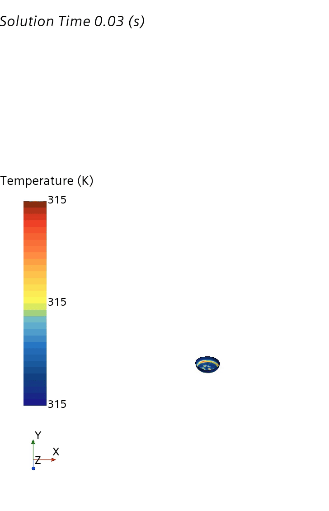
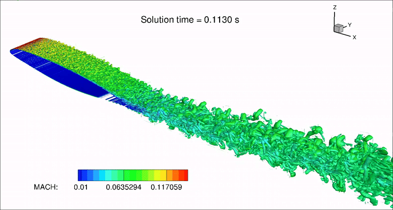
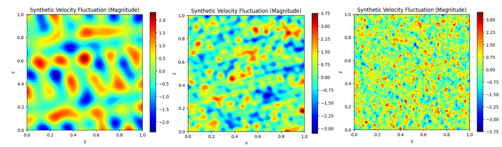
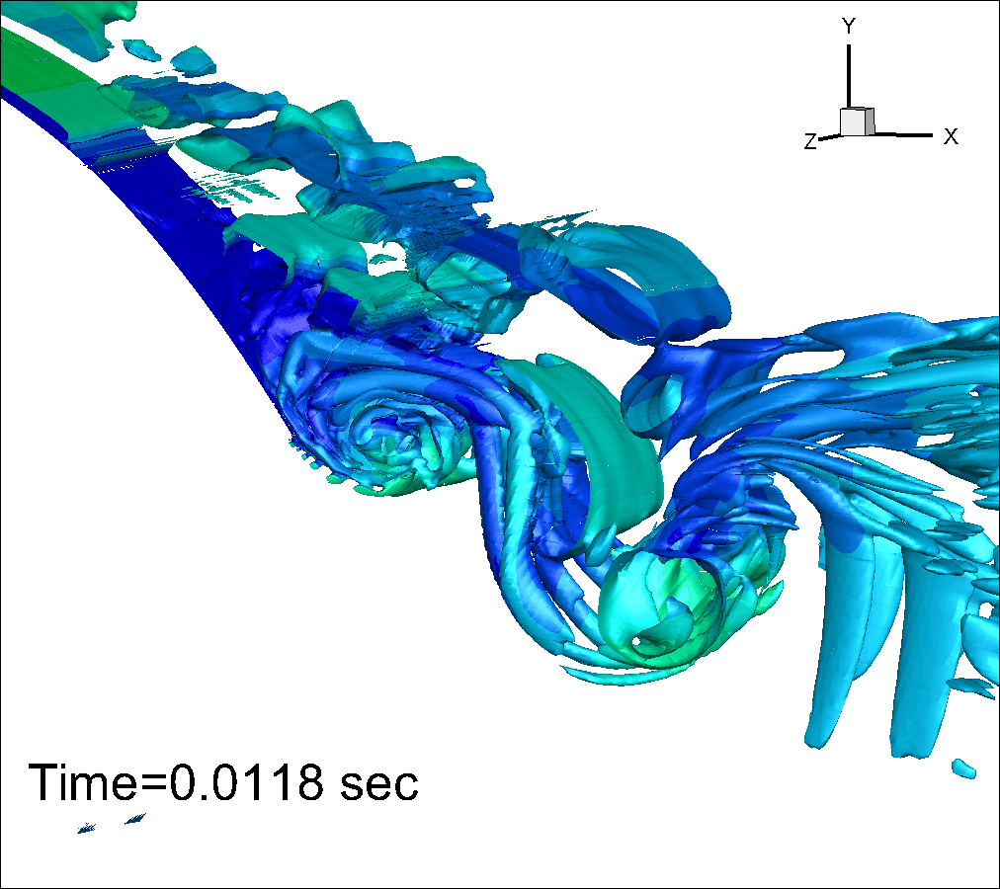
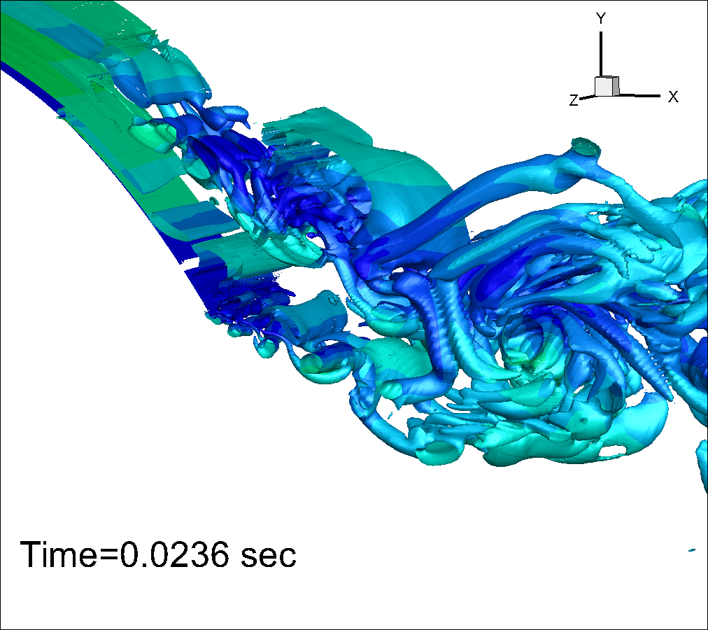
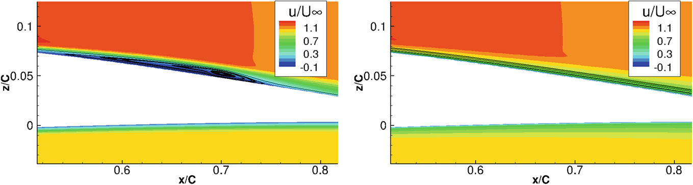
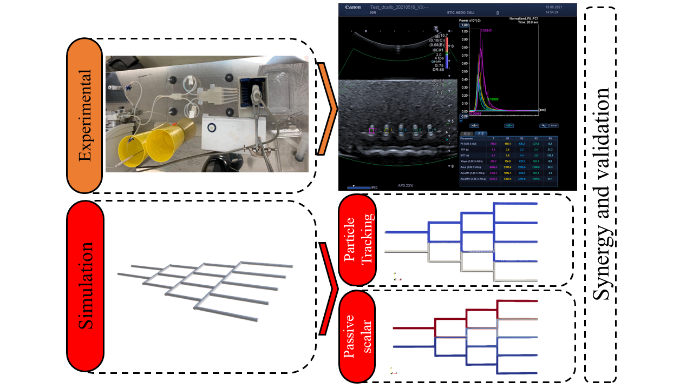
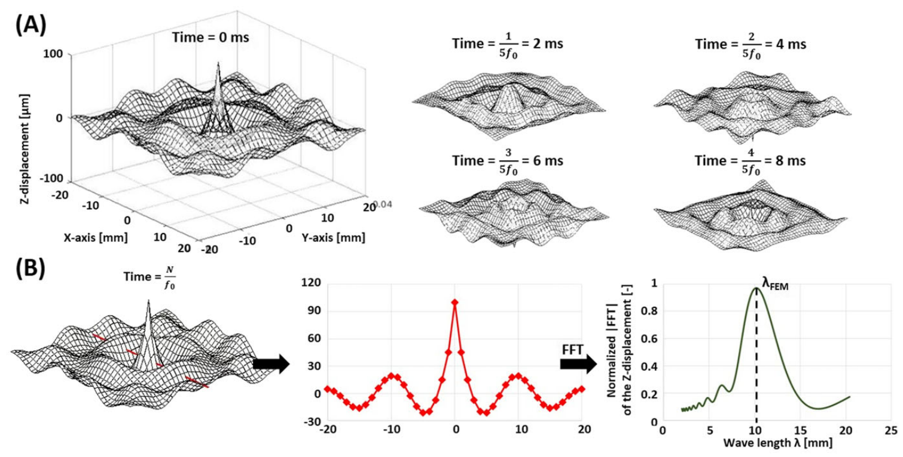

Research Projects
European and ANR National Research Projects
2PhaseEx Two-Phase Exchanger (2024-2027)

Development of a closed-circuit heat exchanger using thermosyphon principles with eco-friendly fluids for thermal energy recovery.
Partners: ICUBE, Hochschule Karlsruhe, various European and regional institutions.
BEALIVE-HORIZON EIC (2023-2026)

Creation of a bio-inspired, electro-active "live skin" for morphing wings, using a traveling wave concept for aeronautical applications.
Partners: ICUBE, ONERA, POLIMI, CFS Engineering, etc.
Micro-FloTec-HORIZON EU (2023-2027)
Advancing heat transfer and thermal management technologies, focusing on multiphase heat transfer performance, flow resistance, and surface modifications.
Partners: ICUBE, Univ. of Rennes, Univ. De Aveiro, various global institutions.
Garteur EG-78 Hybrid RANS/LES Methods (2021-2024)

Improving hybrid RANS/LES methods for aerospace design, focusing on aeroacoustics and flow predictions in industry processes.
Partners: ICUBE, ONERA, SAAB, Univ. of Manchester, etc.
Active Flow Control for Tilt Rotor Aircraft AFC4TR (2020-2022)


Investigating the use of Active Flow Control (AFC) with pulsed air to manage vortical flow on tilt-rotor aircraft.
Partners: CFS Engineering, EPFL, ICUBE/Unistra, Leonardo Helicopter.
TEAMAero: Flow Control & Shock Mitigation (2020-2024)
Improving understanding of shock wave and boundary layer interactions in aeronautics.
Partners: IMFT, IMP-PAN, Gdansk.
Garteur AG59: Laminar Separation Bubbles (2019-2022)

Enhancing numerical simulations of laminar separation bubbles in aerodynamics.
Partners: CIRA, ONERA, DLR, ICUBE/Unistra.
Smart Morphing and Sensing SMS, H2020 (2017-2020)
Using electro-active actuators for aircraft high-lift systems to improve aerodynamics.
Partners: INPT, ONERA, POLIMI, NTUA, and others.
PRACE Allocations
Various research allocations in high-performance computing.
National Research Projects
ANR-COMPET (2025-2029)
Modeling compressible two-phase flows for energy and transport applications.
Partners: ICUBE, Pprime-Poitiers, LEGI-Grenoble.
ANR-EMBIA (2021-2025)
Development of bio-inspired, multiscale live-skin interfaces for aeronautics, inspired by marine biology.
Partners: ICUBE, IMFT, LAPLACE.
Airbus Morphing Drone Thor MINOTHOR (2020)
Testing hybrid morphing concepts in unmanned aerial drones for real-flight performance.
Partners: Airbus R&T, IMFT, LAPLACE.
Dynamic Contrast-Enhanced Ultrasonography imaging protocol

Numerical simulations for calibration setup for Dynamic Contrast-Enhanced Ultrasonography imaging protocol
ANR CAMI (2016)

Biomechanical simulation for medical-surgical interventions, focusing on magnetic resonance elastography.
Partners: ICUBE, AVR Robotics, LAPLACE.